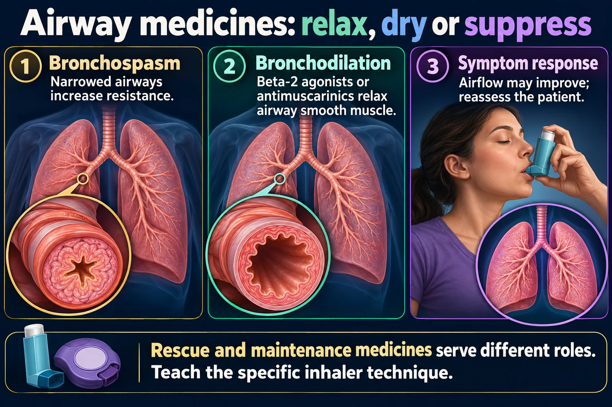

The rescue inhaler — and the one that is NOT a rescue inhaler
Beta-2 agonists relax the ring of smooth muscle wrapped around your airways. That is the whole mechanism — and it is why they work in minutes and why they treat nothing else. The single highest-yield idea on this page: albuterol (SABA) is the rescue inhaler; salmeterol (LABA) is not. Reaching for a LABA during an acute attack is the trap that shows up on every exam, and in real life it is dangerous — the patient waits while nothing happens.
📄 Simple Nursing original — opens in Drive →
One muscle ring, one receptor, one job — and it is not an anti-inflammatory.

Rescue and maintenance medicines serve different roles. Teach the specific inhaler technique.
Bronchospasm
Narrowed airways increase resistance.
Bronchodilation
Beta-2 agonists or antimuscarinics relax airway smooth muscle.
Symptom response
Airflow may improve; reassess the patient.
Beta-2 agonists
Tremor, tachycardia and potassium changes can occur.
Antimuscarinics
Dry mouth is common; avoid spraying medication into the eyes.
Other agents
Antihistamines, cough products and methylxanthines have different purposes and risks.
This is the drawing the whole respiratory drug batch stands on. Every bronchodilator you will meet — beta-2 agonists here, ipratropium and theophylline on the next page — is trying to do the same thing to the same orange ring.
Beta-2 agonists stimulate beta-2 receptors on bronchial smooth muscle, the muscle relaxes, and the airway diameter increases.
More diameter = dramatically less resistance to airflow, so air finally moves out again — which is the part that is actually blocked in asthma.
It does not reduce swelling. It does not reduce mucus. It does not treat the underlying inflammation that caused the attack.
A patient whose only asthma drug is a rescue inhaler is an undertreated patient.
Panel 1 is the therapeutic effect; panel 2 is the side-effect profile. They are the same drug hitting two closely related receptors — which is exactly why the side effects are cardiac and why they get worse as the dose goes up.
Selective means "prefers", not "only". Albuterol is beta-2 selective, so at normal doses most of the effect is in the lung.
Push the dose up — nebs back to back in an ED — and it starts hitting beta-1 receptors on the heart. That is the tachycardia. Nothing has gone wrong; the drug simply spilled over.
Asthma — rescue for acute bronchospasm and pre-treatment before exercise.
COPD — rescue plus, very often, a scheduled long-acting bronchodilator.
Also: acute bronchospasm from any cause, and as part of the emergency treatment of hyperkalemia (it shifts potassium into cells — the same effect that lowers serum K⁺ as a side effect).
If you only take one picture from this page, take this one. The red line is the reason albuterol rescues. The flat start of the blue line is the reason salmeterol cannot.
| SABA — short-acting | LABA — long-acting | |
|---|---|---|
| Examples | Albuterol · levalbuterol | Salmeterol · formoterol · vilanterol |
| Role | RESCUE — the emergency inhaler | MAINTENANCE — scheduled control |
| Onset | ~5–15 minutes | Salmeterol is slow (roughly 20+ min to meaningful effect) |
| Duration | ~4–6 hours | ~12 hours |
| How it is taken | PRN — as needed, carried everywhere | Scheduled, usually twice daily, on a clock |
| During an attack | YES — this is the drug | NEVER — it will not work in time |
| Alone in asthma? | Allowed, but frequent use = poor control | NEVER as monotherapy — must be combined with an inhaled corticosteroid |
A LABA keeps the airway open but does nothing to the inflammation underneath. The patient feels controlled while the disease keeps worsening — so a severe attack arrives with no warning and with a bigger inflammatory load behind it.
That is why asthma LABAs are dispensed as combination inhalers (LABA + inhaled corticosteroid) rather than on their own.
Formoterol is a LABA with a fast onset, and in some modern combination-inhaler regimens it is used both as maintenance and for symptom relief — but only inside a combination inhaler that also contains a steroid, and only when that specific regimen has been prescribed.
For exam purposes, and unless a combination regimen is explicitly described: the rescue drug is albuterol. Salmeterol is never the answer to "she is wheezing right now."
Nearly every side effect is the same story: the drug wandered onto beta-1.
Everything marked here is expected. Knowing that is half the exam: the question usually asks you to separate a normal, predictable effect from something that needs a phone call.
The commonest and most-tested effect. Beta-1 spill-over speeds the heart.
Expected: a rise after a treatment, settling over the next 20–30 minutes.
Report: chest pain, a rate that keeps climbing dose after dose, or a new irregular rhythm. In a patient already on nebulizers, the source infographic's rule is worth memorizing: alert the provider about tachycardia BEFORE giving the next dose.
Beta-2 receptors also sit on skeletal muscle. Stimulate them and you get a fine tremor, most obvious when the hands are held out.
It is harmless and it fades, but it frightens patients — tell them about it before the first dose so they don't stop the drug.
Patients describe it as feeling "wired", "buzzy" or like they drank too much coffee.
Practical teaching: avoid a dose right at bedtime where the schedule allows, and cut down on caffeine, which stacks on top of it.
Beta-2 stimulation drives potassium into cells, so serum K⁺ can drop — worth watching with repeated nebulizers, and especially alongside diuretics or digoxin.
Watch for muscle weakness, cramps, and ECG changes.
Rare, but it exists: the airway tightens after the inhaler instead of opening.
Stop the drug, stay with the patient, call the provider. Worsening wheeze immediately after a dose is never something to "give another puff for".
Most "asthma drug failure" is actually inhaler-technique failure.
Ask the patient to show you, don't ask whether they know how. Teach-back on an inhaler catches more problems than any question you can phrase.
A metered-dose inhaler is a suspension — drug particles sitting in propellant. Unshaken, the first puffs can be mostly propellant.
5–10 seconds of shaking, every single time. Prime a new or long-unused inhaler as the label directs before the first dose.
"Which order do I use my inhalers in?" is a guaranteed teaching question. The answer is always the same three words at the bottom of this figure.
Between two puffs of the same inhaler, wait about 1 minute.
Patients mix the two inhalers up constantly, and the consequences run in both directions.
Use the dose counter if the device has one, or track puffs against the labeled total.
Do not teach the old float-it-in-water trick — it is unreliable and it can contaminate or damage the device.
Beta blockers — atenolol, propranolol, metoprolol. A beta blocker is the chemical opposite of a beta agonist; non-selective ones in particular can trigger bronchospasm and blunt the rescue inhaler.
NSAIDs — ibuprofen, naproxen, aspirin. A subset of asthmatics have NSAID-exacerbated respiratory disease and can bronchospasm badly.
The acute attack, in order — and the four questions that keep being asked.
Notice that the drug that works fastest goes first and the drug that works slowest goes last — but the slow one is still given early, because "later" means hours from now.
Oxygen, continuous monitoring and sitting the patient upright run alongside all three.
A client with asthma begins wheezing and reports chest tightness. Which prescribed inhaler should the nurse have the client use?
A client is discharged with albuterol and beclomethasone inhalers. Which statement by the client requires further teaching?
The nurse gives nebulized albuterol. Which finding is an expected effect?
A client in severe asthma exacerbation has HR > 120, RR > 30, SpO₂ < 90% on room air, and a markedly reduced peak flow. Which prescriptions would the nurse anticipate? Select all that apply.
A wheeze needs moving air to make a sound. When a severe asthmatic stops wheezing and the chest goes quiet, that is not improvement — it can mean almost no air is moving at all.
Look at the whole picture: rate, effort, SpO₂, level of consciousness, ability to speak.
| Family | Drugs | Page |
|---|---|---|
| Beta-2 agonists | Albuterol · salmeterol · formoterol | You are here — NG-102 |
| Anticholinergics | Ipratropium · tiotropium | NG-143 |
| Methylxanthines | Theophylline · aminophylline | NG-143 |
| Inhaled + systemic steroids | Fluticasone · beclomethasone · methylprednisolone | NG-100 |
| Leukotriene inhibitors | Montelukast | NG-100 |
| Upper-airway drugs | Antihistamines · decongestants · antitussives · expectorants | NG-097 |